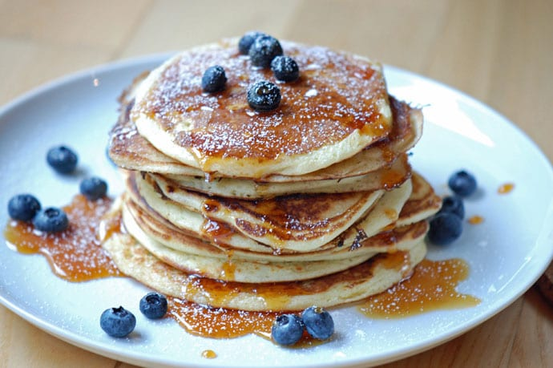

Fluffy panckes for a perfect sunday morning!
Return

Description
These pancakes are great for those relaxing sunday mornings, when you just want to treat yourself to something
nice and easy.
Just stack these pancakes and cover them with syrup, berries, powdered sugar, or whatever your heart desires.
Time: 20 minutes
Ingredients
- 2.5 dl flour
- 2.5 dl milk
- 2 eggs
- 1 tbsp sugar
- 0.5 tsp flaky salt
- 1 tsp baking powder
- 1 tbsp butter or frying oil
Steps
- Mix flour, sugar, salt and baking powder together in a bowl.
- Mix in milk and egg yolks.
- In another bowl, whisk the egg whites until the bowl can be turned upside down without the eggwhites falling out.
- Carfeully turn the eggwhites into the dough without destroying the air bubbles in them.
- Heat up a pan and put the butter or frying oil in the pan and let it smelt.
- Fry the pancakes.
- Bon appetite!